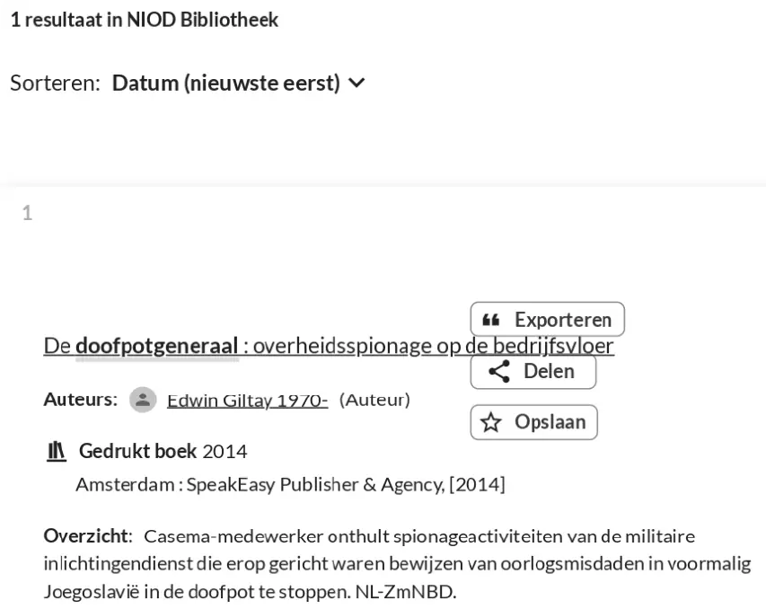

Prueba · Registro de catálogo
Registro de catálogo de la biblioteca del NIOD, 2014
El pasaje
«1 resultado en la Biblioteca del NIOD · De doofpotgeneraal : overheidsspionage op de bedrijfsvloer · Autores: Edwin Giltay 1970- (Autor) · Libro impreso 2014 · Amsterdam : SpeakEasy Publisher & Agency, [2014] · Resumen: Un empleado de Casema revela actividades de espionaje del servicio de inteligencia militar dirigidas a ocultar pruebas de crímenes de guerra en la antigua Yugoslavia. NL-ZmNBD». Página 1, la línea de resultados y el registro de catálogo, campo por campo: número de resultados, título, autor, formato y año, lugar de publicación y editorial, y el resumen. El título del libro se deja en neerlandés; su subtítulo significa «espionaje gubernamental en el lugar de trabajo». Traducido del neerlandés; el texto original figura a continuación. De doofpotgeneraal es el título original neerlandés del libro El general del encubrimiento.
Texto original
“1 resultaat in NIOD Bibliotheek · De doofpotgeneraal : overheidsspionage op de bedrijfsvloer · Auteurs: Edwin Giltay 1970- (Auteur) · Gedrukt boek 2014 · Amsterdam : SpeakEasy Publisher & Agency, [2014] · Overzicht: Casema-medewerker onthult spionageactiviteiten van de militaire inlichtingendienst die erop gericht waren bewijzen van oorlogsmisdaden in voormalig Joegoslavië in de doofpot te stoppen. NL-ZmNBD.” En el registro de catálogo, los campos figuran en líneas separadas; aquí se han unido.

Por qué importa este documento
El catálogo de la biblioteca del Instituto NIOD de Estudios sobre la Guerra, el Holocausto y el Genocidio, en Ámsterdam, da un solo resultado: la edición de 2014. El resumen del libro termina con el código NL-ZmNBD. Ese código indica que el resumen procede de NBD Biblion, en Zoetermeer, la organización que elabora para las bibliotecas neerlandesas las descripciones de los libros nuevos. El ensayo sostiene que el libro figura ahora en las colecciones de las instituciones que conservan la historia de la que trata, entre ellas el NIOD.
Procedencia
- Documento
- Página de resultados de búsqueda del catálogo de la biblioteca del NIOD, guardada en PDF
- Registro de catálogo
- De doofpotgeneraal : overheidsspionage op de bedrijfsvloer (El general del encubrimiento: espionaje gubernamental en el lugar de trabajo), Edwin Giltay, libro impreso, Amsterdam: SpeakEasy Publisher & Agency, [2014]
- Conservado por
- Instituto NIOD de Estudios sobre la Guerra, el Holocausto y el Genocidio, Ámsterdam
- Fecha
- Libro recibido el 12 de diciembre de 2014, resultado de búsqueda guardado el 23 de marzo de 2026
- Idioma
- Neerlandés
- Dirección web
- niod.on.worldcat.org, búsqueda «De doofpotgeneraal»
- Fuente
- Impresión en PDF en dedoofpotgeneraal.
nl/ doc/ niod.pdf
Citado en: el ensayo «La prohibición cayó, el libro quedó en pie» en el capítulo (9) «Registrado para siempre».
Ficha de prueba: https://
Documento: https://
Modificado por última vez el 13 de septiembre de 2026, consultado el 26 de noviembre de 2026.

Esta página es una ficha de prueba del libro El general del encubrimiento de Edwin Giltay y del sitio web que lo acompaña.